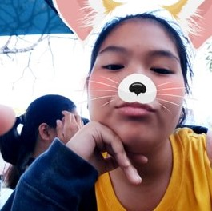
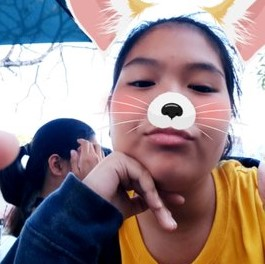

O'Neil
Grade 7 Section: Lateral
Previous Class Number: S07
Current Section: Strontium
Message to a friend:
`
I've never had an older brother - I'm the oldest among four siblings, and I don't really have anyone that I look up to,
or anyone that I can openly tease and have fun with, regardless of topic and responsibilty. While not being my exact idea
of an older brother, O'Neil was always a person I could talk to about games and someone I could actually play those
games with.
He's someone I could call out to and hug in between classes, a sort of support system and love that exists in the same wavelength
as that of the other friends mentioned here - but still unique, a bond I share with no other friend than he.
He owns a spirit that doesn't bend to stress and hardship - he always strives to be better, and to be stronger, and I have
always admired him for that. I envy him for his strength and spirit, because it is something that I wish I could've had so long
ago. At the same time, though, this spirit is so infectious, that it has even been able to touch my heart, bringing me
laughter and a reason to smile.


 
